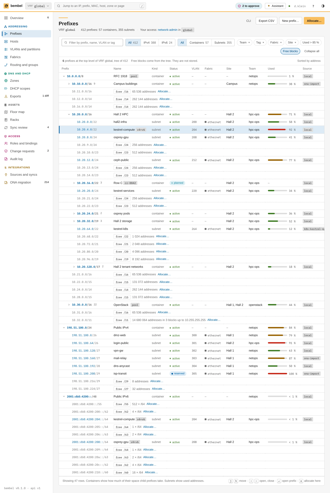
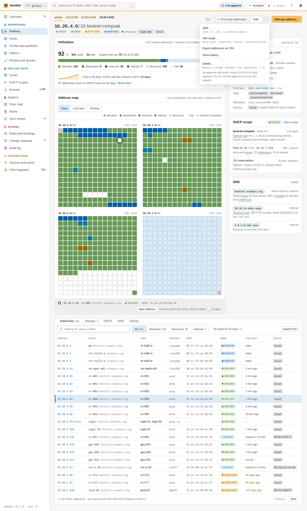
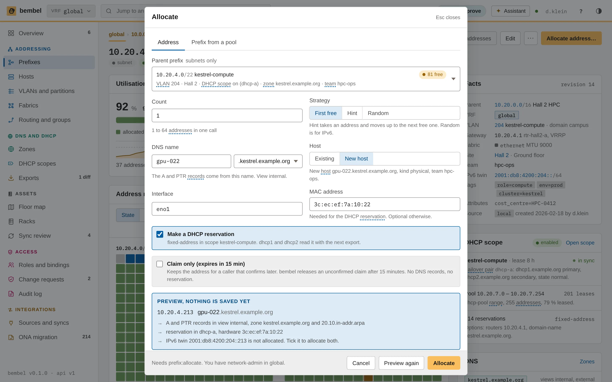
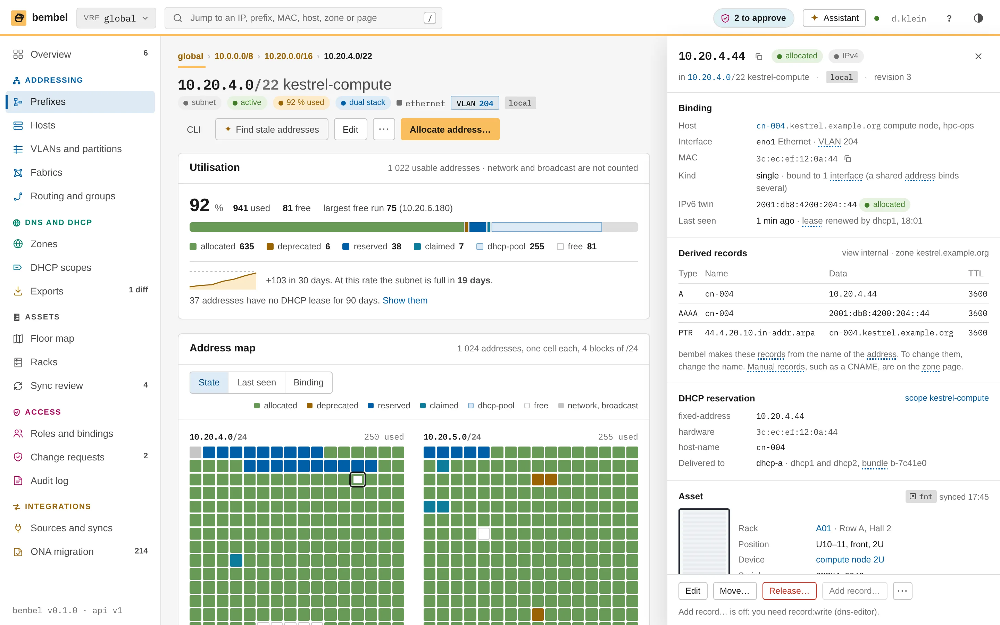
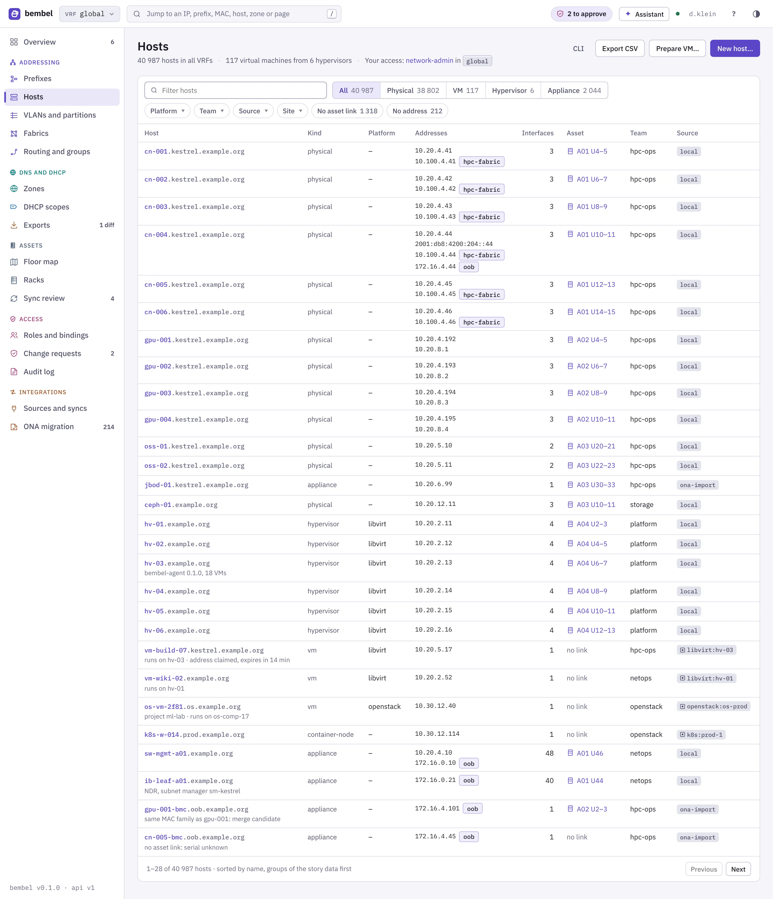
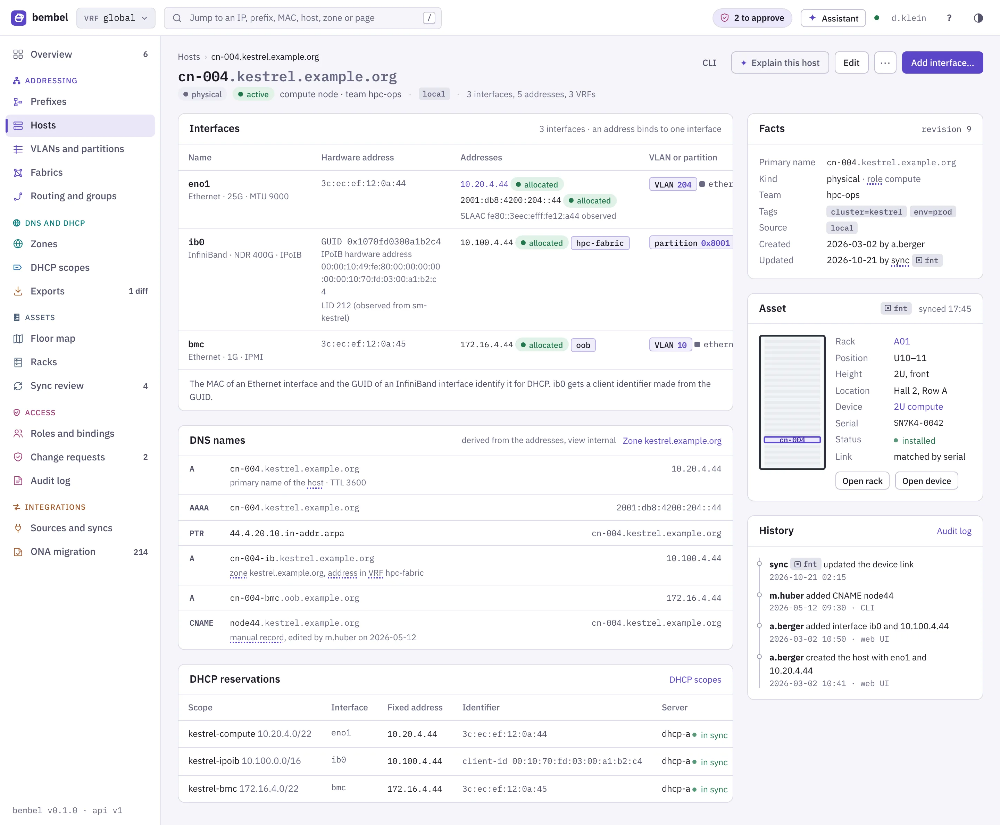
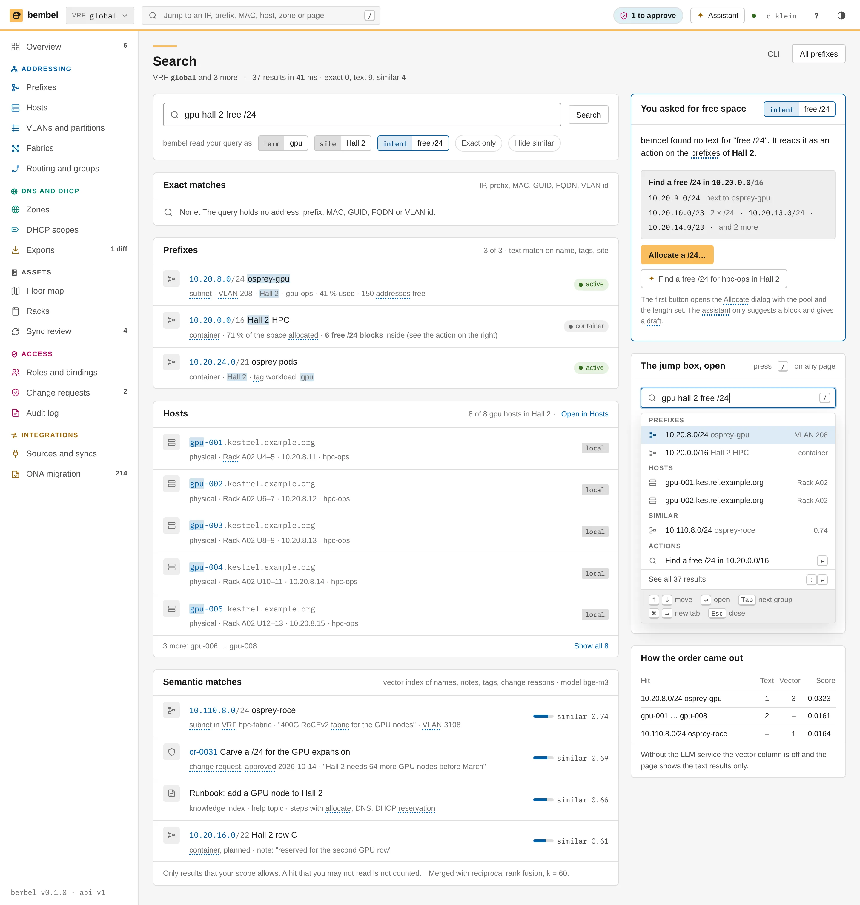

PrefixesThe prefix tree of VRF global with utilisation, free blocks and the planned Hall 2 row C.ui/prefixes.html
Prefix kestrel-compute10.20.4.0/22 at 92 %: the address map, the ranges and the recent claims.ui/prefix.html
Allocate dialogThe next free address 10.20.4.213 with the DNS and DHCP preview and the CLI command.ui/allocate-dialog.html
Address10.20.4.44 on cn-004 eno1 with its derived records and the reservation.ui/address.html
HostsAll hosts with kind, team, asset link and source.ui/hosts.html
Host cn-004Three interfaces in three VRFs, the asset link to Rack A01 and the history.ui/host.html
SearchThe jump box result for an input that matches prefixes, hosts and records.ui/search.html VLANs and partitionsVLANs per VLAN domain and the InfiniBand partitions with their P_Keys.ui/vlans.html
VLANs and partitionsVLANs per VLAN domain and the InfiniBand partitions with their P_Keys.ui/vlans.html FabricsEthernet, RoCEv2 and InfiniBand fabrics with rails, QoS profiles and the OpenSM export.ui/fabrics.html
FabricsEthernet, RoCEv2 and InfiniBand fabrics with rails, QoS profiles and the OpenSM export.ui/fabrics.html Routing and groupsASNs, route targets, static routes, prefix lists and address groups as feeds.ui/routing.html
Routing and groupsASNs, route targets, static routes, prefix lists and address groups as feeds.ui/routing.html